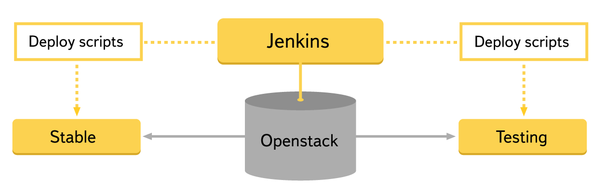

habrahabr.ru
Как внедрить у себя back-to-back-тестирование. Опыт Яндекса
При ускорении разработки возникает потребность ускорить и написание автотестов. К числу подходов, позволяющих покрывать тестами значительные куски функциональности за небольшое время, относится back-to-back-тестирование. Одна из наиболее распространенных разновидностей подобного тестирования для веб-сервисов – это сравнение скриншотов. Мы
о том, как используем его в тестировании поиска Яндекса. Если у вас имеется протестированная версия продукта, то создать набор автотестов для следующих версий достаточно просто и на это не потребуется много времени. Основная трудность состоит в том, чтобы в разных версиях сервиса воспроизводились идентичные ситуации. Для этого зачастую приходится поддерживать большое количество тестовых данных в нескольких средах.
Когда задумываешься об использовании back-to-back-подхода, первое, что приходит в голову, – проводить сравнение со стабильной средой. Но как эталон она подходит для очень ограниченного круга продуктов, потому что данные в стабильном и тестовом окружении зачастую расходятся. Нередко, убедившись, что проводить сравнение со стабильной средой не удастся, исследователь отказывается от использования back-to-back-тестирования. Читайте под катом о паре стандартных способов внедрения данного подхода, которые мы используем для сервисов Яндеса и которые решают многие проблемы, возникающие при использовании стабильной среды. Также мы расскажем об их достоинствах и недостатках, которые мы обнаружили.
Для примера рассмотрим веб-сервис, который можно условно разделить на фронтенд и бэкенд. Его страницы формируются на основе данных, полученных от бэкенда. А значит, если на две независимые версии фронтенда придут одинаковые данные, то они должны сформировать одинаковые страницы, которые уже можно будет сравнивать. Мы добивались подобного двумя способами:
Рассмотрим каждый из этих способов подробнее.
Общий бэкенд
Описание сервиса
Мы применяли данный метод для тестирования партнерского интерфейса Яндекс.Маркета (
) – веб-сервиса, позволяющего партнерам Яндекса управлять размещением своих товаров на Яндекс.Маркете, следить за состоянием магазинов и просматривать статистику. Фактически вся функциональность сервиса – это представление большого количества различных данных. Часть данных носит конфиденциальный характер, и большинство страниц скрыты за процедурой авторизации. Поскольку для различных типов пользователей и магазинов одна и та же страница может выглядеть по-разному, для полноценного тестирования нужно поддерживать большой набор тестовых данных, покрывающий все кейсы.
Если исходить из того, что сравнивать мы будем тестовую и стабильную среду, то сервис совершенно не подходит для проверок через скриншоты. Поддерживать большой набор идентичных данных в тестовом и стабильном окружении очень затратно, а для части страниц просто невозможно, потому что некоторые данные магазинов являются конфиденциальными и повторить их на тестовой среде нельзя.
Внедрение
При ручных проверках в тестовом окружении поддерживаются данные для воспроизведения всех нужных кейсов. Поэтому, развернув в сервисе дополнительную среду, на которую мы будем выкладывать стабильные пакеты, и нацелив их на тестовую базу, мы избавляемся от расхождения данных и получаем два экземпляра сервиса, позволяющие тестировать его сравнением скриншотов.
Чтобы начать тестировать, необходимы физические или виртуальные машины, на которых будет разворачиваться сервис. Поскольку они требуются на короткий срок, пока идут тесты, мы решили не держать постоянно поднятые экземпляры сервиса, а получать виртуальные машины из облака и устанавливать на них нужные пакеты. Для этого мы использовали плагин для дженкинса, который через openstack получает необходимые виртуалки. А после с помощью набора скриптов мы устанавливаем на них все нужные пакеты и запускаем сервис. Стабильные пакеты мы разворачиваем в тестовом окружении, поэтому для них подходят существующие конфигурационные файлы тестовой среды. Весь процесс занимает около 10 минут.

Сами тесты были написаны таким образом, что пользователь (в нашем случае ручной тестировщик) задает набор страниц, которые он хочет тестировать, плюс некоторые параметры, такие как авторизационные данные, роль и т. д. Тесты считывают входные условия, выполняют некоторый набор действий, после чего сравнивают скриншоты страницы либо какой-то ее части. Для сравнения и построения отчета мы используем тот же инструмент, что и в этом посте. Он представляет различия скриншотов в удобном для человека виде, что позволяет легко анализировать результаты запусков большого количества тестов.
Использование
Стабильность проверок фронтенда при таком подходе зависит от работы бэкенда. Это может создавать проблемы, так как бэкенд в тестовом окружении будет время от времени ломаться – например, из-за неудачных сборок или проблем среды. Провести тестирование в таких случаях не получится, даже если сами фронтенды работают. Но при этом проверяется интеграция, ведь страницы формируются на основании актуальных ответов бэкенда. Формат взаимодействия может меняться. Например, при появлении в ответе бэкенда блока с данными, нужного для построения новых частей страницы, старая версия фронтенда уже не сможет обработать эти данные и часть тестов сломается. Но если выделить как общую часть не весь бэкенд, а только хранилище данных, то проблема решается, так как в этом случае проверяются две связки фронтенда и бэкенда, которые имеют совместимые версии.
Сами тесты производят мало действий со страницей. Какой случай будет проверяться, зачастую определяют данные в тестовой среде. Поэтому они должны быть стабильными, и, если что-то меняется, пользователь автотестов всегда должен об этом знать. Например, данные могут регулярно копироваться из стабильного окружения. Это полезно, так как тестировщик при этом находится в одном контексте с реальными пользователями, но не все случаи будут воспроизводиться на «боевых» данных. Часть функциональности может присутствовать только на тестовой среде, и, чтобы проверять ее, потребуются дополнительные данные, которых в стабильном окружении пока просто нет. Если они стираются при копировании, то тесты новой функциональности могут ломаться или перестать проверять нужные случаи.
Чтобы тест начал проверять новую страницу, достаточно просто внести ее в список и задать параметры, поэтому для покрытия новых кейсов или поддержки данных участие разработчика автотестов не требуется. Разработка тестов понадобится только для более сложных сценариев взаимодействия со страницей (ввод значений, активация всплывающих окон, подсказок и т. д.).
Все нужные для проверок данные уже находятся в тестовой среде. Чтобы руками воспроизвести результаты теста, дополнительные инструменты не потребуются. Если пропал какой-то элемент или нарушилось его положение, достаточно просто открыть проверяемую страницу в тестовом фронтенде.
Достоинства и недостатки метода
Достоинства:
Недостатки:
Эмуляция ответа бэкенда
Описание сервиса
Мы применяли этот подход для тестирования интерфейсов
, через которые партнеры могут управлять своими рекламными кампаниями. Как и в предыдущем случае, основная часть функциональности страниц – это представление большого количества данных, получаемых от бэкенда. Отображение зависит от многих факторов, таких как тип рекламной кампании, пользователь и т. д. Эти факторы трудно контролировать. Например, информация о пользователе приходит в Директ из других сервисов, и, чтобы ее поменять, придется обращаться к ним. Такие параметры, как тип рекламной кампании, вообще можно менять ограниченное число раз в сутки. Все это очень усложняет тестирование. Чтобы сделать тесты более стабильными, мы решили убрать зависимость от бэкенда, а следовательно, от данных и интеграции с другими сервисами Яндекса.
Внедрение
У фронтендов на тестовых средах была добавлена возможность задать ответ бэкенда при загрузке страницы, то есть построить страницу по произвольным данным, заданным тестом. Среда, на которую раскладывался стабильный пакет, у нас уже была, поэтому разворачивать новые не понадобилось. Но чтобы начать полноценно использовать сравнение скриншотов, пришлось написать дополнительный модуль для тестов, который бы управлял данными, передаваемыми странице. Для хранения используемых ответов бэкенда мы решили взять распределенную файловую систему
. Данные в ней группируются по кейсам и типам тестов. Для удобства управления общую информацию о данных мы решили хранить в нашей внутренней wiki, так что пользователь автотестов может легко узнать, что и как проверяется, а также поменять что-то, если это необходимо. Чтобы разработчик сервиса мог легко воспроизводить и чинить найденные баги, пришлось реализовать возможность повторять тесты вручную.
Использование
При таком подходе тесты становятся полностью независимыми от бэкенда, что ускоряет их и делает более стабильными. Чтобы воспроизвести определенную ситуацию, достаточно передать на фронтенд нужный ответ, который можно сохранить заранее или формировать по шаблону. Однако интеграция с актуальной версией бэкенда при этом не проверяется, ее придется тестировать отдельно, например, используя подход, описанный выше.
Пропадает необходимость совершать много предварительных действий перед тестами. Чтобы проверить какие-либо кейсы, не обязательно создавать новую кампанию, проводить ее через цикл проверок, обеспечивать ей положительный баланс и т. д – достаточно просто сформировать подходящий ответ бэкенда. Появляется возможность проверять кейсы, которые просто так нельзя воспроизвести, – например, поведение, зависящее от времени.
Формат ответа бэкенда может меняться, и это делает тесты потенциально уязвимыми. Чтобы решить эту проблему, мы предусмотрели возможность брать актуальный ответ бэкенда и записывать его в хранилище тестовых данных – тогда при последующих прогонах тестов будет использоваться именно он. Но для части кейсов такой способ не подойдет. Если для воспроизведения сложного случая ответ бэкенда редактировался, то взять актуальный ответ бэкенда не получится. При изменении формата ответа данные таких кейсов придется актуализировать, и на это будет затрачено время. Чтобы исправлять тестовые ответы бэкенда, нужно знать особенности реализации сервиса и обладать определенными техническими навыками, что делает поддержку данных более затратной.
Достоинства и недостатки метода
Достоинства:
Недостатки:
Заключение
Легко видеть: недостатки одного подхода становятся достоинствами в другом, так что разумно эти подходы сочетать. Первый способ проще, с него можно начать, он не потребует дополнительной разработки и поддержки. Однако второй способ более гибкий, он дает возможность воспроизводить сложные ситуации. Подняв две версии над одним бэкендом, можно получить возможность оценить количество сложных кейсов, время выполнения тестов и их стабильность. Это позволит понять, следует ли внедрять более продвинутые подходы.
В обоих рассмотренных случаях мы применяли back-to-back-подход для тестирования фронтенда. Но ограничиваться фронтендом совсем не обязательно. Основная трудность при back-to-back-тестировании – обеспечить совпадение данных в разных версиях пакетов. Для большинства продуктов данные лежат в каком-то хранилище. Отделив как общую часть только хранилище, можно получить возможность тестировать логику бэкенда без создания дополнительных тестов. Точно таким же способом можно тестировать и различные API или другие сервисы, не включающие фронтенд.
Применять подход очень удобно в самом начале разработки продукта, когда автотестов еще нет или слишком мало. Быстро покрыв логику расчета и отображения результатов, можно сосредоточиться на более сложной функциональности, которую нельзя проверить таким способом, – например, сохранении и изменении данных. Из-за того, что продукт активно изменяется, выдачи разных версий часто не совпадают, что может приводить к ложным падениям back-to-back-тестов. Поэтому в первую очередь следует обеспечить хороший отчет, который позволит легко анализировать результаты. Особенно эта проблема актуальна в самом начале разработки продукта, так как постоянно появляется много новой функциональности и внешний вид сервиса сильно меняется.
Показательно, что проблемы с тестированием скриншотами можно легко решить улучшением среды, а не усложнением тестов, поэтому перед разработкой тестов разумно проанализировать, какую выгоду принесет улучшение среды, и тогда, возможно, сложные тесты писать вообще не придется.